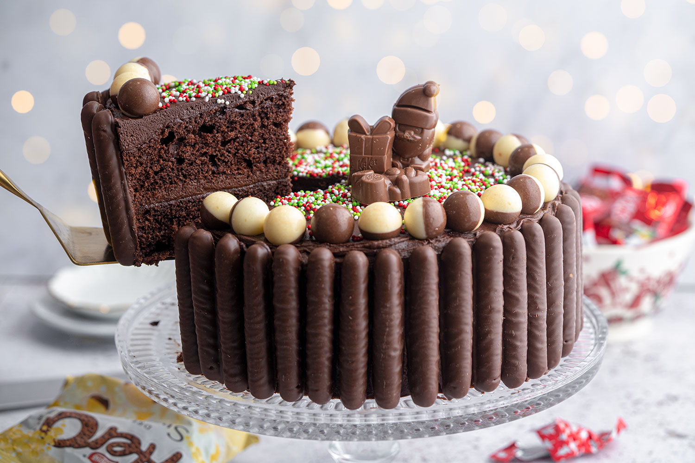

Recipie
Cheese Burger
Ingredients
please select
10 oz. certified Angus ground beef
2 slices thick bacon
2 oz. Vidalia onion, diced
½ tsp. butter
1 fresh country butter roll
1 slice Sargento® Sliced Sharp Cheddar Cheese
1 slice Sargento® Sliced Pepper Jack Cheese
1 slice Sargento® Natural Blends® Sliced Colby-Pepper Jack Cheese
1 slice Sargento® Sliced Aged Swiss Cheese
Chesse Pasta
Ingredients
Melted Butter and Oil
– a combination of bothCGH H to make sure our pasta is super moist
Seasonings
– chili flakes, oregano, finely chopped garlic (the golden trio)
Chopped Veggies
– I used capsicum and mushroom but you can use any on hand!
Fusili Pasta
– you can use any shape that conveniently fits into a baking dish, but NOTE that we will be using raw pasta
Red Pasta Sauce
– I use storebought tomato pasta sauce (my fave is: Barilla Pasta sauce) but you can use homemade tomato sauce too
Water
– the KEY ingredient to this pasta bake! Since we are using raw pasta, we need to add water to the sauce to make sure the pasta is fully cooked through
Mozarella Cheese & Basil Leaves
– for the final touch, a baked cheesy crust & herb topping
chocolate Cake

Ingredients
Gluten-free self-raising flour: I use a simple commercial blend from the free from aisle in the supermarket – my go to is FREEE. If you can’t find a blend like this where you live, you can always make your own using my gluten-free flour recipe.
Gluten-free baking powder: Not all baking powder is gluten-free so make sure you read the ingredients list on the product first. You’ll find this down the free from aisle.
Xanthan gum: This helps to bind the cake crumb together so it doesn’t become crumbly, replacing the gluten that would otherwise do the same job. You’ll find this down the free from aisle.
Cocoa powder: Any cocoa powder will do, but make sure it’s dairy-free if you need it to be. Ideally sieve your cocoa powder before using or it can be quite lumpy and hard to mix in.
Butter: Salted or unsalted is totally fine (I use unsalted), but whichever you go for, make sure it’s
Caster sugar: Sugar isn’t just for sweetness – it helps to achieve a lovely crisp exterior and helps the sponge to form a perfect crumb.
Eggs: I use large eggs for this recipe, but medium works fine too. If you can’t tolerate egg, check the vegan section of the FAQ for some simple swaps you can try.
Vanilla extract: The better quality yours is, the better it will taste!
Icing sugar: You’ll need this for the buttercream as caster sugar won’t work here.
Dark chocolate: You’ll need some melted dark chocolate for the buttercream. Don’t worry, it doesn’t taste super dark and bitter as it’s balanced out with butter and icing sugar – it just creates a super indulgent, creamy, chocolatey taste! I usually use 54% or 70% dark chocolate.
Gluten-free chocolate treats: I used Schar gluten-free chocolate fingers, Aero Snowbubble chocolate balls and KitKat mini Santas. You’ll find the chocolate fingers in supermarket free from aisles, but the other two are from the seasonal chocolate aisle.
Gluten-free colourful sprinkles: Not all sprinkles are commonly gluten-free, so make sure yours are! I liked the ones I used in the FAQ section.
more